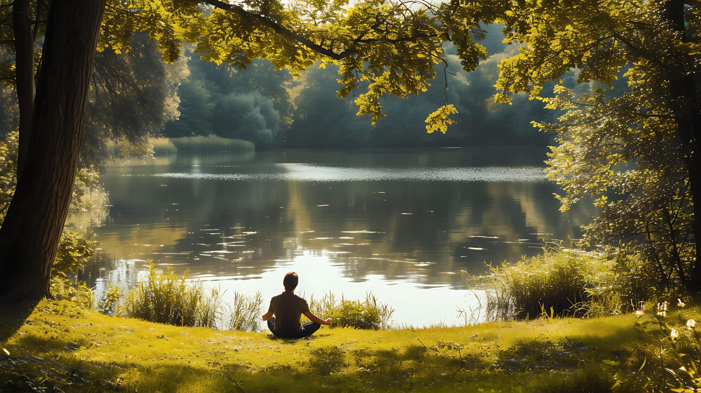
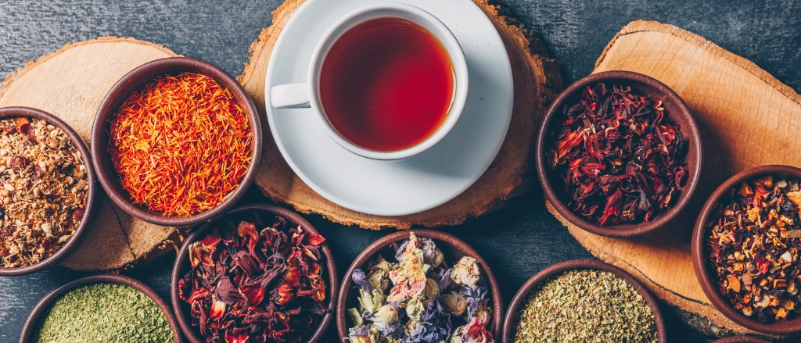
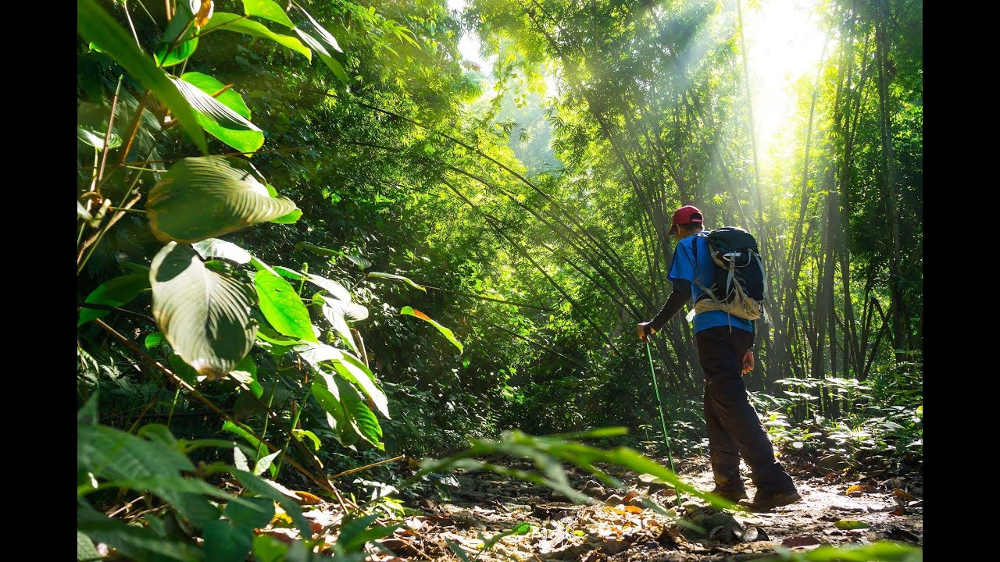
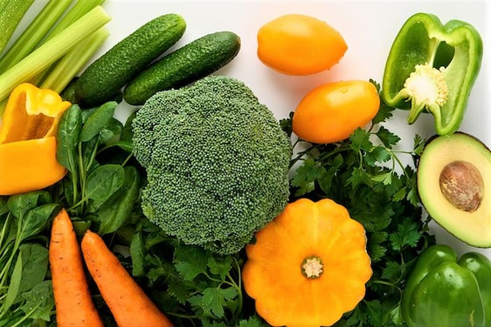
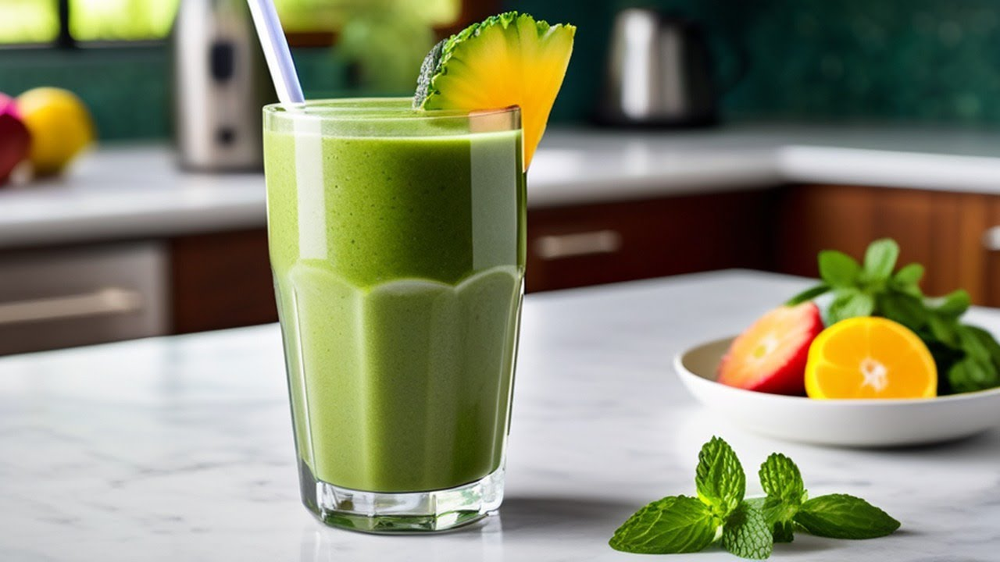
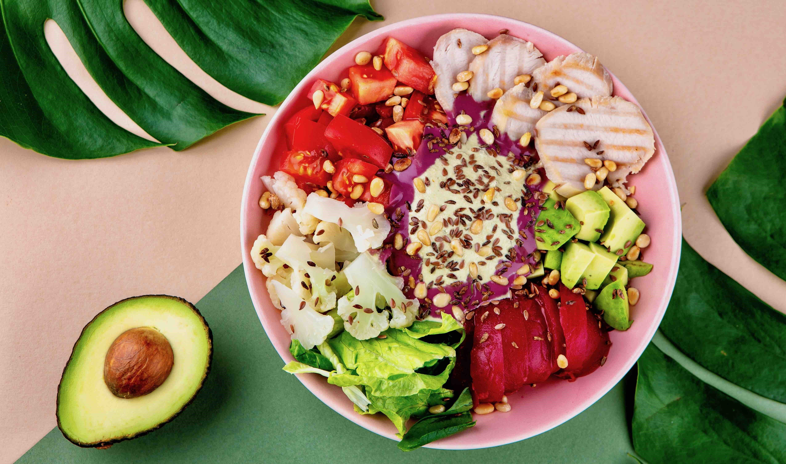
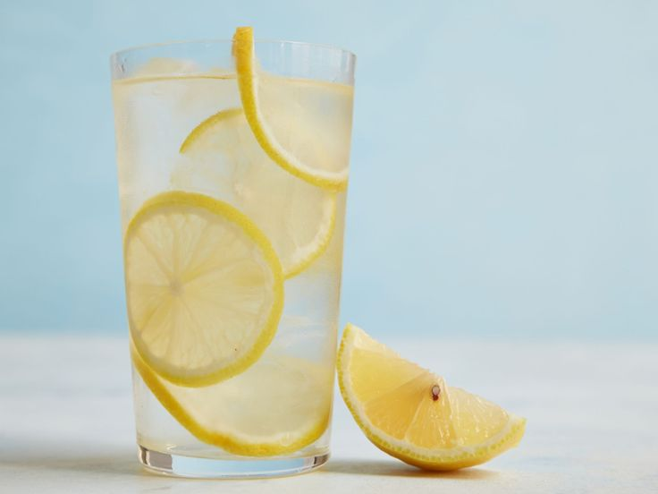
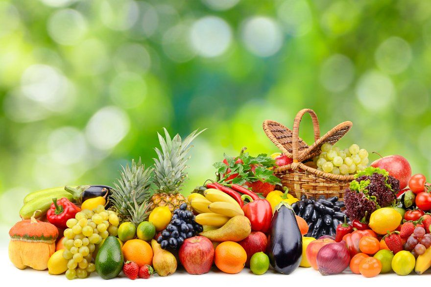
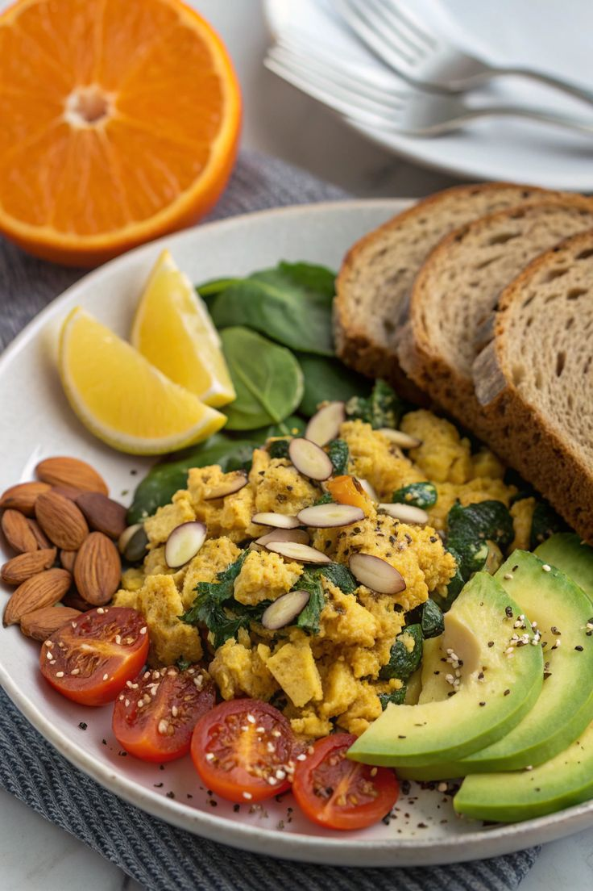

Гармония тела, чистота природы. Вдохновляйся каждым днём с заботой о себе.

Ежедневные ритуалы для естественного здоровья
Встречай солнце с мягкими асанами. Гибкость и спокойствие.
утро
Мята, ромашка, липа — природная аптека в каждой чашке.
ритуал
Земля под ногами, воздух, наполненный фитонцидами.
природаТо, что мы едим — становится нами. Выбирай органическое.

С грядки на стол — максимум витаминов и вкуса.

Шпинат, киви, яблоко — заряд бодрости на весь день.

Семена чиа, ягоды годжи, спирулина — сила природы.
«Здоровье — это не цель, а образ жизни. Каждый день я выбираю натуральное, чистое, живое.»
— Елена, 35 летМаленькие моменты большого здоровья


